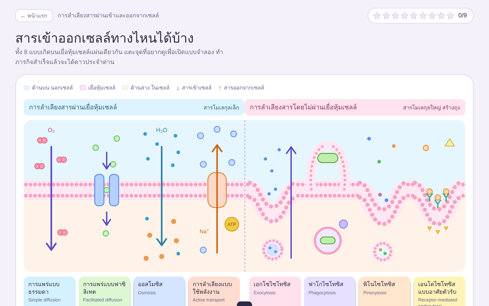
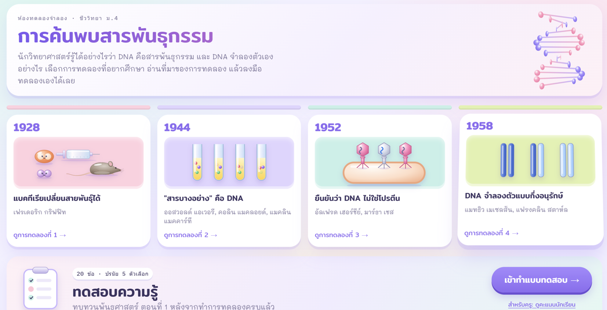
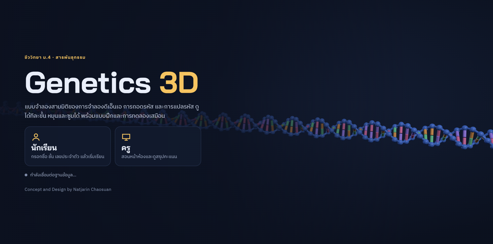
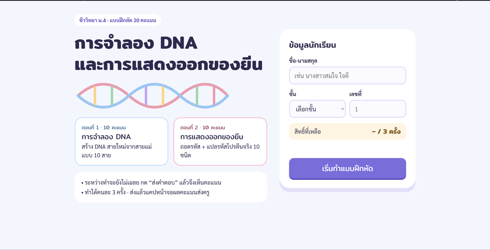

บันทึกผลงาน
Lab 2 · 3D 1 · แบบฝึกหัด 1
ออกแบบแบบจำลองการปฏิบัติการทั้ง 2 มิติและ 3 มิติ ให้นักเรียน ม.4 สายวิทย์-คณิต ใช้เรียนบน iPad โดยใช้ AI หลายตัวช่วยสร้างสื่อ ครูเป็นผู้กำหนดเนื้อหาให้สอดคล้องกับหลักสูตร และตรวจความถูกต้องทางวิชาการทุกจุดก่อนนำไปใช้กับนักเรียน
ภารกิจข้ามเยื่อหุ้มเซลล์
Lab 2D
ภารกิจข้ามเยื่อหุ้มเซลล์
แบบจำลองการลำเลียงสาร 8 แบบบนเยื่อหุ้มเซลล์ ทั้งแบบผ่านและไม่ผ่านเยื่อหุ้มเซลล์ นักเรียนลงมือทำภารกิจในแต่ละด่าน เก็บดาว และปิดท้ายด้วยแบบทดสอบ 12 ข้อ
เปิดผลงาน ↗
การค้นพบสารพันธุกรรม
Lab 2D
การค้นพบสารพันธุกรรม
ลงมือทำการทดลองสำคัญ 4 การทดลอง ของกริฟฟิท เอเวอรี แมคลาวด์และแมคคาร์ที เฮอร์ชีย์และเชส และเมเซลสันและสตาห์ล ทีละขั้นตอน พร้อมแบบทดสอบ 20 ข้อที่ครูดูคะแนนได้
เปิดผลงาน ↗
Genetics 3D
แบบจำลอง 3D🚧 อยู่ในขั้นตอนการพัฒนา
Genetics 3D
แบบจำลอง 3 มิติของการจำลองตัวของ DNA การถอดรหัส และการแปลรหัส ดูทีละขั้น หมุนและซูมได้ ปรับความเร็วได้ มีคำถามชวนคิดทุกขั้น และมีโหมดครูสำหรับสอนหน้าห้อง
เปิดผลงาน ↗
การจำลอง DNA และการแสดงออกของยีน
แบบฝึกหัดออนไลน์
การจำลอง DNA และการแสดงออกของยีน
แบบฝึกหัด 20 คะแนน จำลองตัวของ DNA 10 ข้อ และถอดรหัส แปลรหัสโปรตีนจริงในร่างกาย 10 ข้อ ใช้ตารางโคดอนประกอบ
เปิดผลงาน ↗